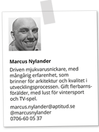
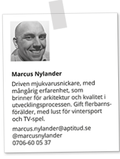
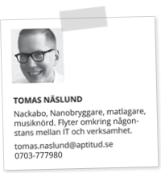
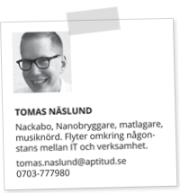

|

Vi bygger Stockholms bästa arbetsplats. Där fokus är att ha roligt i sitt arbete. En plats dit människor söker sig naturligt, dit alla är välkomna. Välkomna att utbyta ideer, att inspireras och att inspirera. En plats för stolta och passionerade hantverkare. Ivriga att lära och dela med sig av sin kunskap. Präglade av ödmjukhet och strävan mot ständig förbättring. En plats för konsulter, deras vänner och kunder. Utvecklare, coacher, evangelister, ledare, ja alla som driver på utvecklingen inom området. En plats för oss som är seriösa utan att ta oss själva på för stort allvar. För oss som tycker om att ha roligt. Vi drivs av Glädje, Transparens och Jävlar anamma. |

Vi träffas en arbetsdag i månaden för att utveckla och utvecklas tillsammans. Bara för att det är kul och för att bli inspirerade. Och för att umgås. Vi gillar nämligen människor. Därför är dörren öppen och alla är välkomna. Vi börjar dagen med att sätta agendan och kolla av vilka projekt som är igång och vad det finns för roliga ideer som behöver realiseras. Anything goes! Dagen avslutas med middag hos oss och en öppen afterwork för vänner i och utanför branschen. |


 

 

|
|
2013-03-14 |